Desde el día que te conocí, me mostraste lealtad y sinceridad.
Cada momento a tu lado ha sido maravilloso, con subidas y bajadas,
pero esto ha ido fortaleciéndonos. Espero vivir más momentos
contigo y lograr hacerte la mujer más feliz del mundo.
Con todo el cariño, te dedico esta página.
¡TE AMO MUCHO! 💕❤️
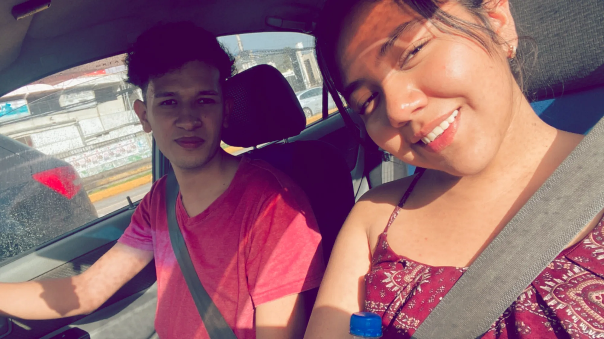
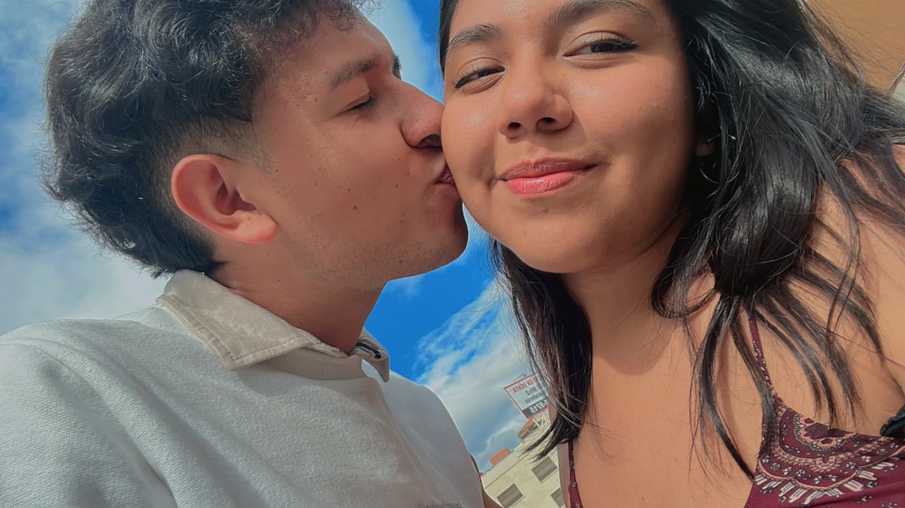
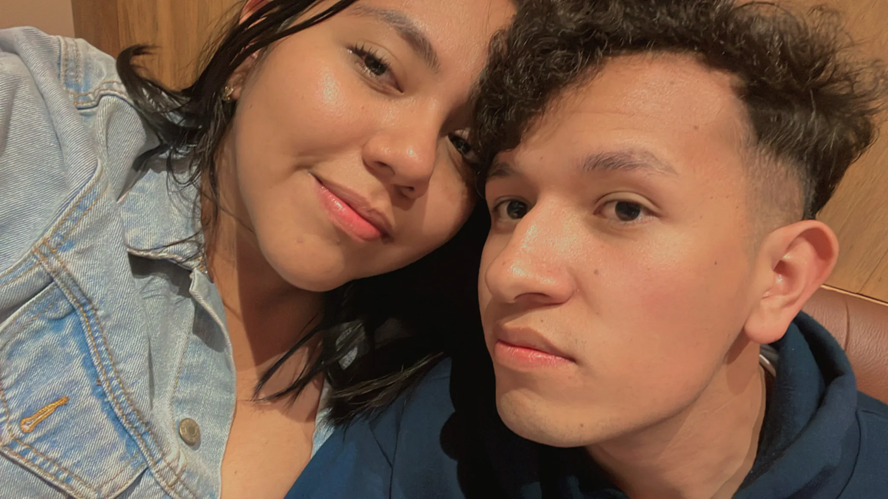
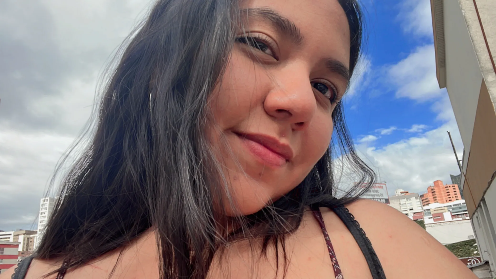
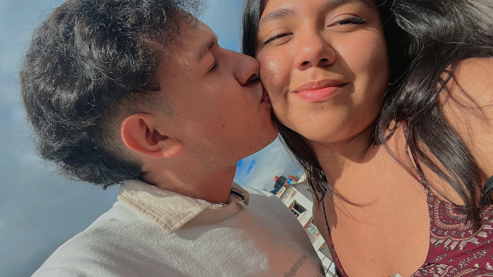
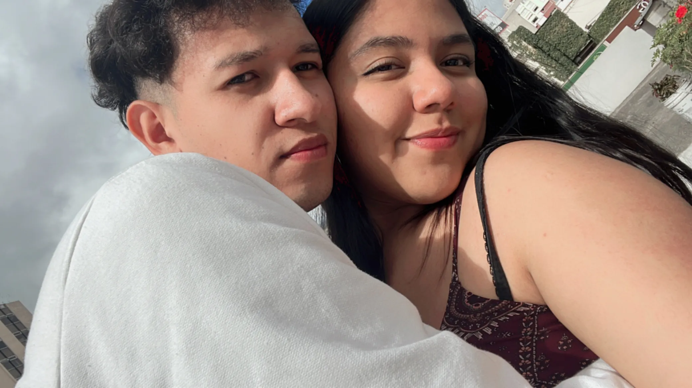
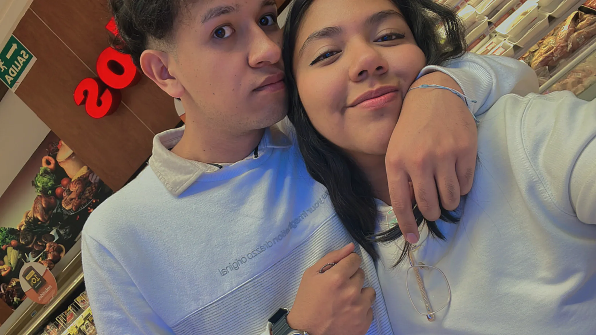
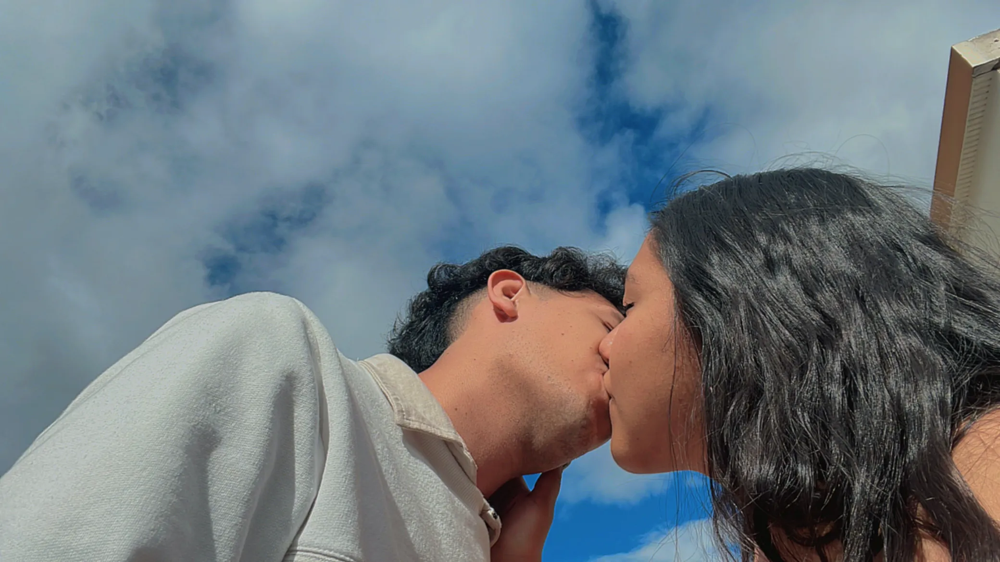
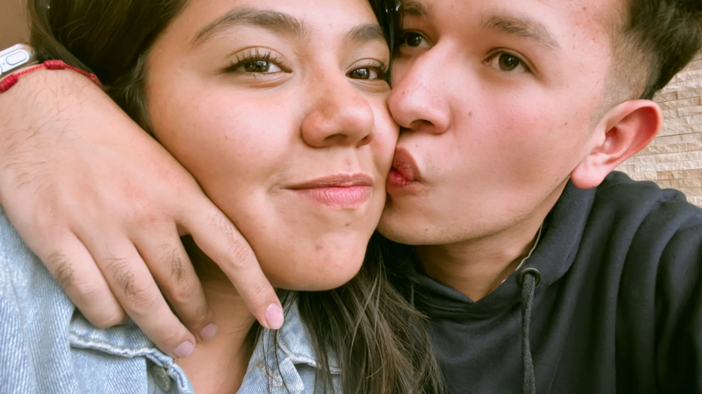
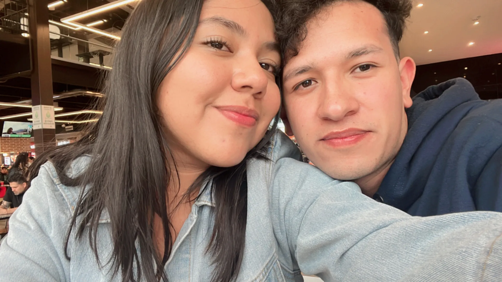
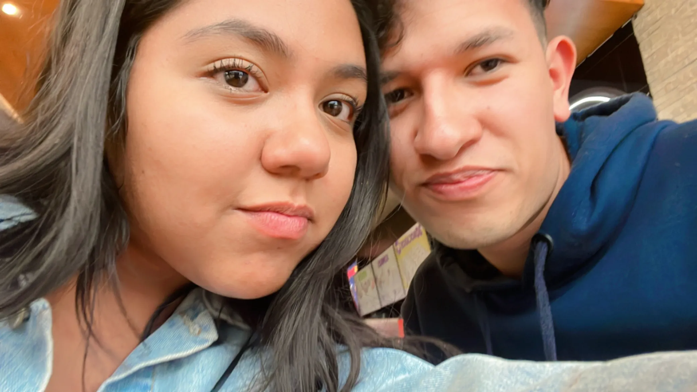
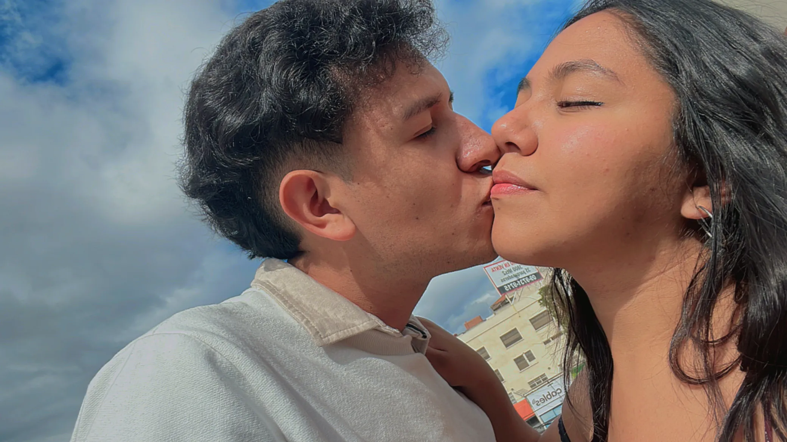
05 de enero de 2025
Cuando volvimos a hablarnos
Todo empezó con un "Hola" a la 1:57 de la mañana.
Nunca lo hubiera pensado, pero fue el inicio de una nueva etapa en mi vida.
15 de enero de 2025
Cuando te pedí que fueras mi novia
¿Cómo olvidar cuando estabas con miedo por la distancia y pensabas que no iba a funcionar?
Pero te animaste, y creo que fue la mejor decisión de mi vida.
17 de enero de 2025
Cuando nos vimos en persona
Recuerdo cómo estabas vestida, con tu vestido naranja y toda hermosa.
Aunque nos vimos poco tiempo, fue lindo cómo comimos juntos y tú pidiendo el helado
del mismo sabor dos veces. ¡Qué lindo pasamos ese día!
01 de marzo de 2025
Nuestra primera vez
Recuerdo cómo estabas nerviosa, con miedo de que te lastimara.
Todo fue tan maravilloso y qué feliz me hiciste sentir todo el día.
03 de agosto de 2025
Mi primera vez comiendo sushi
Cuando me llevaste a comer sushi, no sabía ni cómo agarrar los palillos.
04 de agosto de 2025
Cuando conocí a tus padres
Estaba muy nervioso, pero me gustó cómo se portaron conmigo.
Querían darme de comer mucho, y de los nervios no tenía hambre.
05 de agosto de 2025
Cuando conociste a mis padres
Estabas tan nerviosa y no sabíamos qué hacer.
Fuimos al cine, nos besamos y pasamos momentos inolvidables.
Desde el 15 de enero han pasado 8 lindos meses en los cuales he aprendido mucho de ti.
Han sido los mejores meses de mi vida. Te amo mucho y te mereces esto y más.
Por muchos meses más a tu lado. Estoy muy orgulloso de ti y de todo lo que día tras día haces.
Gracias por todo. Sé que faltan más cosas por nombrar o por poner, pero prometo hacer una segunda versión
y ahí completarla.